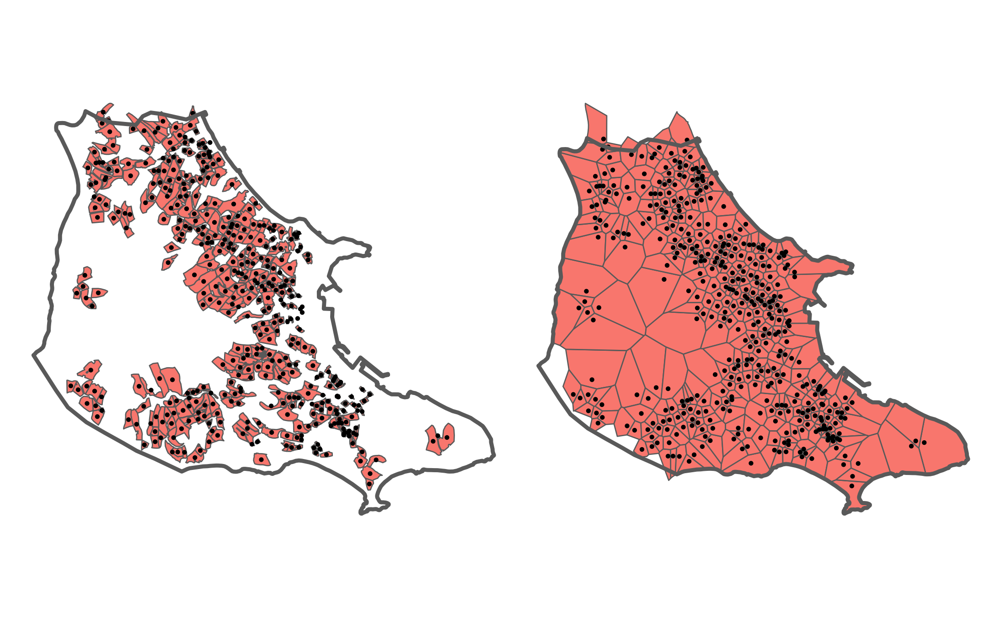
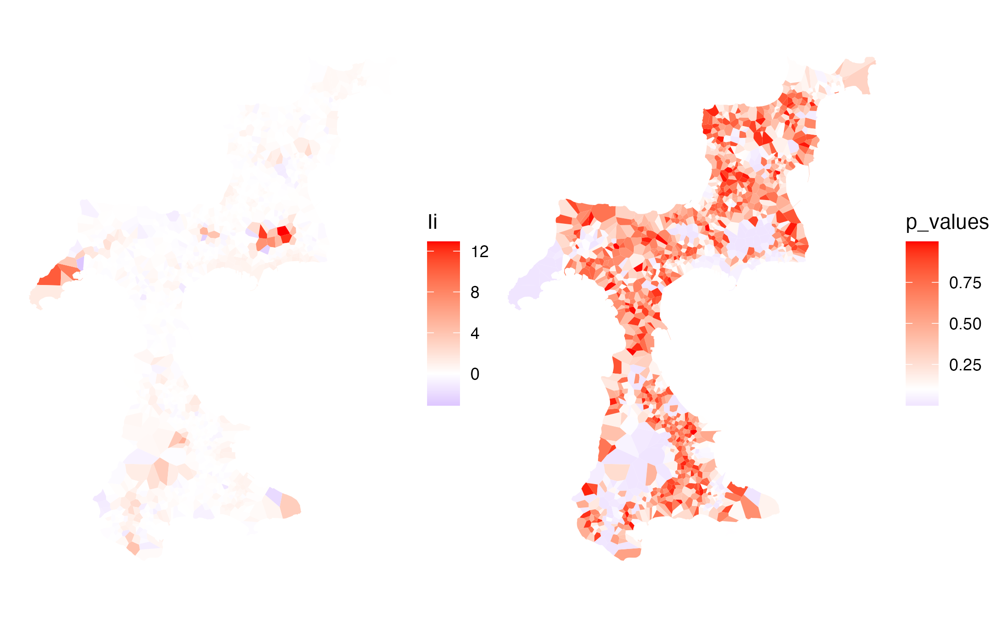
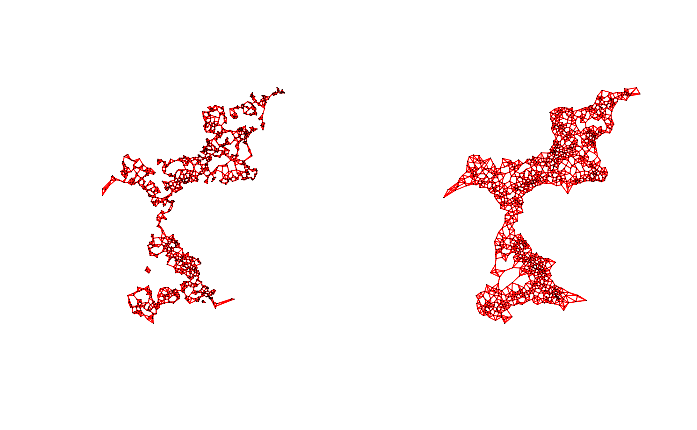
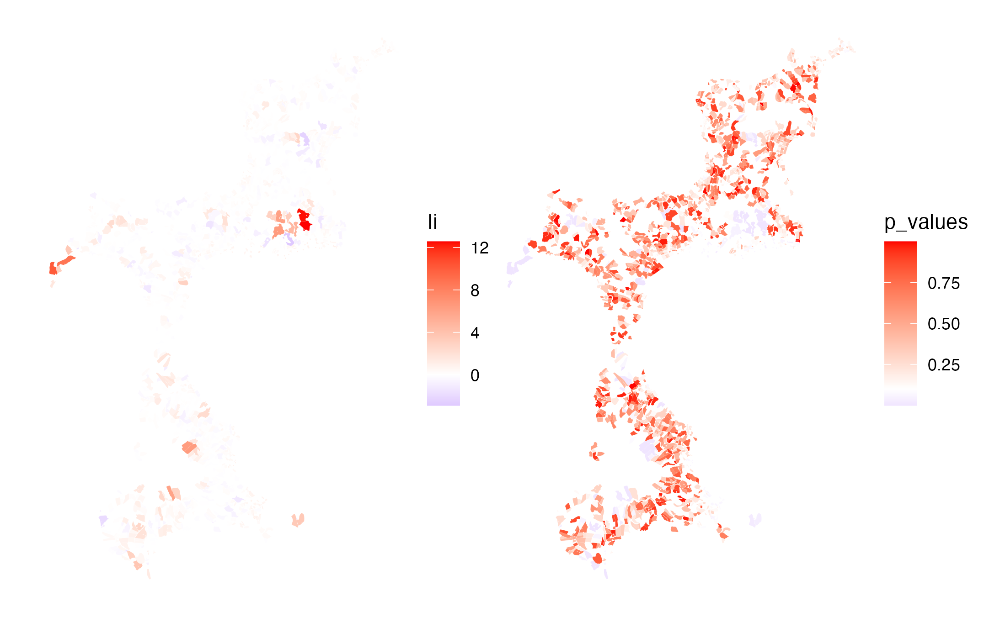
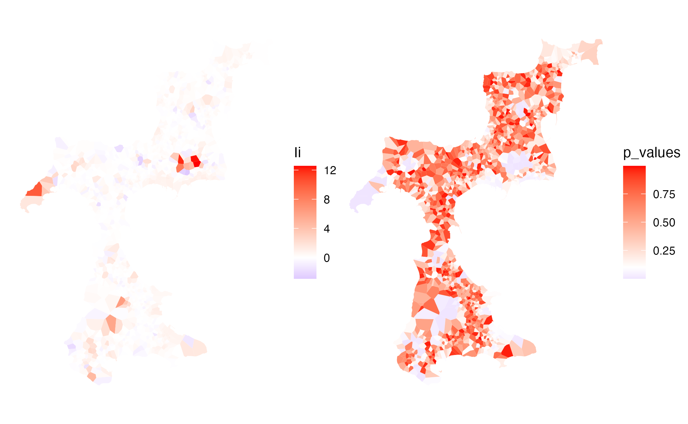

Testing the Functionality
st_voronoi()
library(dplyr)
library(ggplot2)
library(sf)
library(patchwork)
db <- combine_fude(d, b, city = "松山市", community = "由良|北浦|鷲ケ巣|門田|馬磯|泊|御手洗|船越")
db$fude_points <- db$fude %>%
sf::st_drop_geometry() %>%
dplyr::mutate(
geometry = purrr::map(centroid, ~ sf::st_point(c(.x[1], .x[2])))
) %>%
dplyr::mutate(
geometry = sf::st_sfc(geometry, crs = 4326)
) %>%
sf::st_as_sf(crs = 4326)
fude_points_projected <- sf::st_transform(db$fude_points, crs = 6677)
community_union_projected <- sf::st_transform(db$community_union, crs = 6677)
voronoi <- fude_points_projected %>%
sf::st_geometry() %>%
sf::st_union() %>%
sf::st_voronoi() %>%
sf::st_collection_extract(type = "POLYGON") %>%
sf::st_sf(crs = 6677) %>%
sf::st_intersection(y = sf::st_geometry(community_union_projected)) %>%
sf::st_join(y = fude_points_projected) %>%
dplyr::select(-geometry.y) %>%
dplyr::rename(geometry = geometry.x) %>%
sf::st_cast("POLYGON") %>%
sf::st_transform(crs = 4326)
map1 <- ggplot() +
geom_sf(data = db$fude |> filter(RCOM_NAME == "泊"), aes(fill = RCOM_NAME), linewidth = .3) +
geom_sf(data = db$fude_points |> filter(RCOM_NAME == "泊"), size = .5) +
geom_sf(data = db$community |> filter(RCOM_NAME == "泊"), aes(fill = RCOM_NAME), alpha = 0, linewidth = 1) +
theme_void() +
theme(legend.position = "none")
map2 <- ggplot() +
geom_sf(data = voronoi |> filter(RCOM_NAME == "泊"), aes(fill = RCOM_NAME), linewidth = .3) +
geom_sf(data = db$fude_points |> filter(RCOM_NAME == "泊"), size = .5) +
geom_sf(data = db$community |> filter(RCOM_NAME == "泊"), aes(fill = RCOM_NAME), alpha = 0, linewidth = 1) +
theme_void() +
theme(legend.position = "none")
map1 + map2
出典：農林水産省「筆ポリゴンデータ（2022年度公開）」および「農業集落境界データ（2022年度）」を加工して作成。
voronoi$area_voronoi <- sf::st_area(voronoi)
voronoi$a_voronoi <- as.numeric(units::set_units(voronoi$area_voronoi, "a"))
ggplot(data = voronoi, aes(x = a_voronoi, fill = land_type_jp)) +
geom_histogram(position = "identity", alpha = .5) +
labs(x = "面積（a）",
y = "頻度") +
facet_wrap(vars(RCOM_NAME)) +
labs(fill = "耕地の種類") +
theme_minimal() +
theme(text = element_text(family = "Hiragino Sans"))
spdep::poly2nb() and localmoran()
library(spdep)
coords <- sf::st_coordinates(sf::st_centroid(voronoi))
nb <- spdep::poly2nb(voronoi, queen = TRUE)
plot(nb, coords, cex = .01, col = "red")
lw <- spdep::nb2listw(nb, style = "W", zero.policy = TRUE)
(moran_test <- spdep::moran.test(voronoi$a, listw = lw))##
## Moran I test under randomisation
##
## data: voronoi$a
## weights: lw
## n reduced by no-neighbour observations
##
## Moran I statistic standard deviate = 15.109, p-value < 2.2e-16
## alternative hypothesis: greater
## sample estimates:
## Moran I statistic Expectation Variance
## 0.2309847210 -0.0006510417 0.0002350384
localmoran <- spdep::localmoran(voronoi$a, listw = lw)
localmoran_df <- as.data.frame(localmoran)
voronoi$Ii <- localmoran_df$Ii
gI <- ggplot() +
geom_sf(data = voronoi, aes(fill = Ii), colour = "black", linewidth = 0) +
scale_fill_gradient2(low = "blue", mid = "white", high = "red", midpoint = 0,
space = "Lab", na.value = "grey50",
guide = "colourbar", aesthetics = "fill") +
theme_void()
voronoi$p_values <- localmoran_df[, "Pr(z != E(Ii))"]
sum(voronoi$p_values < 0.1, na.rm = TRUE) / nrow(voronoi)## [1] 0.1892068
gp <- ggplot() +
geom_sf(data = voronoi, aes(fill = p_values), colour = "black", linewidth = 0) +
scale_fill_gradient2(low = "blue", mid = "white", high = "red", midpoint = 0.1,
space = "Lab", na.value = "grey50",
guide = "colourbar", aesthetics = "fill") +
theme_void()
gI + gp
出典：農林水産省「筆ポリゴンデータ（2022年度公開）」および「農業集落境界データ（2022年度）」を加工して作成。
spdep::knn2nb() and localmoran()
coords1 <- sf::st_coordinates(db$fude_points)
nb1 <- spdep::knn2nb(spdep::knearneigh(coords1, k = 4))
coords2 <- sf::st_coordinates(sf::st_centroid(voronoi))
nb2 <- spdep::knn2nb(spdep::knearneigh(coords2, k = 4))
par(mfrow = c(1, 2))
plot(nb1, coords1, cex = .010, col = "red")
plot(nb2, coords2, cex = .010, col = "red")
lw1 <- spdep::nb2listw(nb1, style = "W")
(moran_test1 <- spdep::moran.test(db$fude_points$a, listw = lw1))##
## Moran I test under randomisation
##
## data: db$fude_points$a
## weights: lw1
##
## Moran I statistic standard deviate = 13.722, p-value < 2.2e-16
## alternative hypothesis: greater
## sample estimates:
## Moran I statistic Expectation Variance
## 0.2317222844 -0.0006506181 0.0002867890
lw2 <- spdep::nb2listw(nb2, style = "W")
(moran_test2 <- spdep::moran.test(voronoi$a, listw = lw2))##
## Moran I test under randomisation
##
## data: voronoi$a
## weights: lw2
##
## Moran I statistic standard deviate = 13.4, p-value < 2.2e-16
## alternative hypothesis: greater
## sample estimates:
## Moran I statistic Expectation Variance
## 0.2257435726 -0.0006506181 0.0002854297
localmoran <- spdep::localmoran(db$fude_points$a, listw = lw1)
localmoran_df <- as.data.frame(localmoran)
db$fude2 <- db$fude
db$fude2$Ii <- localmoran_df$Ii
gI <- ggplot() +
geom_sf(data = db$fude2, aes(fill = Ii), colour = "black", linewidth = 0) +
scale_fill_gradient2(low = "blue", mid = "white", high = "red", midpoint = 0,
space = "Lab", na.value = "grey50",
guide = "colourbar", aesthetics = "fill") +
theme_void()
db$fude2$p_values <- localmoran_df[, "Pr(z != E(Ii))"]
sum(db$fude2$p_values < 0.1) / nrow(db$fude2)## [1] 0.1254876
gp <- ggplot() +
geom_sf(data = db$fude2, aes(fill = p_values), colour = "black", linewidth = 0) +
scale_fill_gradient2(low = "blue", mid = "white", high = "red", midpoint = 0.1,
space = "Lab", na.value = "grey50",
guide = "colourbar", aesthetics = "fill") +
theme_void()
gI + gp
出典：農林水産省「筆ポリゴンデータ（2022年度公開）」および「農業集落境界データ（2022年度）」を加工して作成。
localmoran <- spdep::localmoran(voronoi$a, listw = lw2)
localmoran_df <- as.data.frame(localmoran)
voronoi$Ii <- localmoran_df$Ii
gI <- ggplot() +
geom_sf(data = voronoi, aes(fill = Ii), colour = "black", linewidth = 0) +
scale_fill_gradient2(low = "blue", mid = "white", high = "red", midpoint = 0,
space = "Lab", na.value = "grey50",
guide = "colourbar", aesthetics = "fill") +
theme_void()
voronoi$p_values <- localmoran_df[, "Pr(z != E(Ii))"]
sum(voronoi$p_values < 0.1) / nrow(voronoi)## [1] 0.1280884
gp <- ggplot() +
geom_sf(data = voronoi, aes(fill = p_values), colour = "black", linewidth = 0) +
scale_fill_gradient2(low = "blue", mid = "white", high = "red", midpoint = 0.1,
space = "Lab", na.value = "grey50",
guide = "colourbar", aesthetics = "fill") +
theme_void()
gI + gp
出典：農林水産省「筆ポリゴンデータ（2022年度公開）」および「農業集落境界データ（2022年度）」を加工して作成。